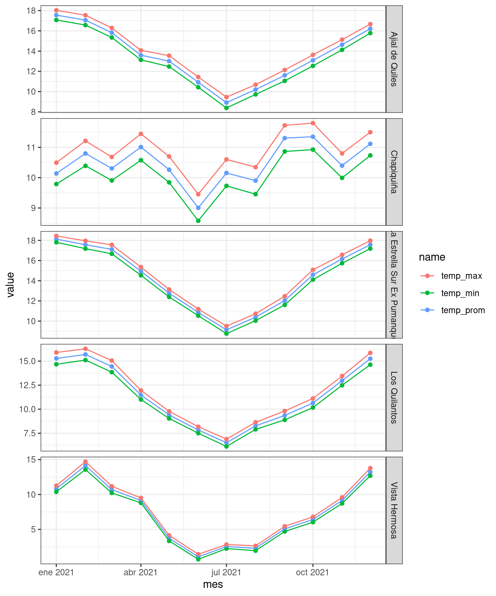

f <- function(x){
s <- 0
for( i in x){
s <- s+i
}
s
}
system.time(f(1:1e9)) user system elapsed
25.089 0.002 25.088 Minería de Datos (DTSE1017)
Iteración for vs funciones vectorizadas
for haga la suma de los n elementos de un vector. Aplique la función sobre el vector x <- rnorm(1e9). Use la función system.time para conocer el tiempo quese demoro en hacer la operación. (30pts)f <- function(x){
s <- 0
for( i in x){
s <- s+i
}
s
}
system.time(f(1:1e9)) user system elapsed
25.089 0.002 25.088 sum para hacer la suma del vector x. Use la función system.time para conocer el tiempo quese demoró en hacer la operación. Cuál de las dos alternativas realiza el cálculo en menor tiempo. (10 pts)system.time(sum(1:1e9)) user system elapsed
0 0 0 apply/lapplyPara los datos agromet, utiliznado R-base seleccione la estación que tiene como nombre "Andacollo". Cree una función apply (apply,lapply,sapply) que permita calcular la suma diaria de precipitación. (50pts)
Para el siguiente tibble:
library(dplyr)
library(tidyr)
data <- iris |>
group_by(Species) |>
nest() |>
ungroup()lapply sobre la columna list-column que permita obtener la dimensión de cada data.frame anidado. (10pts)data$data |> lapply(dim)[[1]]
[1] 50 4
[[2]]
[1] 50 4
[[3]]
[1] 50 4lapply sobre la columna list-column data que permita obtener los nombres de cada data.frame anidado. (10pts)data$data |> lapply(names)[[1]]
[1] "Sepal.Length" "Sepal.Width" "Petal.Length" "Petal.Width"
[[2]]
[1] "Sepal.Length" "Sepal.Width" "Petal.Length" "Petal.Width"
[[3]]
[1] "Sepal.Length" "Sepal.Width" "Petal.Length" "Petal.Width" lapply sobre la columna list-column data que permita obtener la primera y cuarta columna de cada data.frame anidado. (30pts)data$data |> lapply(\(x) x[,c(1,4)])[[1]]
# A tibble: 50 × 2
Sepal.Length Petal.Width
<dbl> <dbl>
1 5.1 0.2
2 4.9 0.2
3 4.7 0.2
4 4.6 0.2
5 5 0.2
6 5.4 0.4
7 4.6 0.3
8 5 0.2
9 4.4 0.2
10 4.9 0.1
# … with 40 more rows
[[2]]
# A tibble: 50 × 2
Sepal.Length Petal.Width
<dbl> <dbl>
1 7 1.4
2 6.4 1.5
3 6.9 1.5
4 5.5 1.3
5 6.5 1.5
6 5.7 1.3
7 6.3 1.6
8 4.9 1
9 6.6 1.3
10 5.2 1.4
# … with 40 more rows
[[3]]
# A tibble: 50 × 2
Sepal.Length Petal.Width
<dbl> <dbl>
1 6.3 2.5
2 5.8 1.9
3 7.1 2.1
4 6.3 1.8
5 6.5 2.2
6 7.6 2.1
7 4.9 1.7
8 7.3 1.8
9 6.7 1.8
10 7.2 2.5
# … with 40 more rows{tidyr} y {dplyr}library(readr)
data_agromet <- read_rds('data/data_estaciones_agrometAPI.rds')set.seed(4321)
ids <- data_agromet |>
slice_sample(n=5) |>
select(station_id) |>
pull(station_id)
ids[1] 661 208 658 78 428station_id temp_maxima (10pts)data_agromet <- data_agromet |>
filter(station_id %in% ids) |>
select(station_id:temp_maxima)
data_agromet |> glimpse()Rows: 43,680
Columns: 10
$ station_id <dbl> 78, 78, 78, 78, 78, 78, 78, 78, 78, 78, 78, 78, …
$ fecha_hora <dttm> 2021-01-01 03:00:00, 2021-01-01 04:00:00, 2021-…
$ temp_promedio_aire <dbl> 13.9, NA, 14.3, 13.1, 13.0, NA, 20.0, NA, NA, NA…
$ precipitacion_horaria <dbl> 0, NA, 0, 0, 0, NA, 0, NA, NA, NA, 0, NA, NA, 0,…
$ humed_rel_promedio <dbl> 80.0, NA, 76.0, 81.0, 81.5, NA, 61.0, NA, NA, NA…
$ presion_atmosferica <dbl> 1009.8, NA, 1010.3, 1011.5, 1012.6, NA, 1014.1, …
$ radiacion_solar_max <dbl> 0.0, NA, 0.0, 0.0, 154.4, NA, 590.0, NA, NA, NA,…
$ veloc_max_viento <dbl> 0.7, NA, 0.0, 0.0, 1.5, NA, 1.5, NA, NA, NA, 1.8…
$ temp_minima <dbl> 13.9, NA, 14.3, 13.1, 12.4, NA, 20.0, NA, NA, NA…
$ temp_maxima <dbl> 13.9, NA, 14.3, 13.1, 13.9, NA, 20.0, NA, NA, NA…fecha_hora y temp_maxima para cada estación en la columna data. (20 pts)data_nest <- data_agromet |>
group_by(station_id) |>
nest() |>
ungroup()
data_nest# A tibble: 5 × 2
station_id data
<dbl> <list>
1 78 <tibble [8,736 × 9]>
2 208 <tibble [8,736 × 9]>
3 428 <tibble [8,736 × 9]>
4 658 <tibble [8,736 × 9]>
5 661 <tibble [8,736 × 9]>tidyr para extraer las columnas de fecha_hora,temp_promedio_aire, temp_minima y temp_maxima. (50pts)data_unnest <- data_nest |>
hoist(data,
fecha_hora = 'fecha_hora',
temp_prom = 'temp_promedio_aire',
temp_max = 'temp_maxima',
temp_min = 'temp_minima') |>
unnest(cols = c(fecha_hora,temp_prom,temp_max,temp_min)) |>
select(-data)
data_unnest# A tibble: 43,680 × 5
station_id fecha_hora temp_prom temp_max temp_min
<dbl> <dttm> <dbl> <dbl> <dbl>
1 78 2021-01-01 03:00:00 13.9 13.9 13.9
2 78 2021-01-01 04:00:00 NA NA NA
3 78 2021-01-01 05:00:00 14.3 14.3 14.3
4 78 2021-01-01 06:00:00 13.1 13.1 13.1
5 78 2021-01-01 07:00:00 13 13.9 12.4
6 78 2021-01-01 08:00:00 NA NA NA
7 78 2021-01-01 09:00:00 20 20 20
8 78 2021-01-01 10:00:00 NA NA NA
9 78 2021-01-01 11:00:00 NA NA NA
10 78 2021-01-01 12:00:00 NA NA NA
# … with 43,670 more rowslibrary(lubridate)
data_mes <- data_unnest |>
group_by(station_id, mes = floor_date(fecha_hora, '1 month')) |>
summarize(across(contains('temp'),mean,na.rm = TRUE))
data_mes# A tibble: 60 × 5
# Groups: station_id [5]
station_id mes temp_prom temp_max temp_min
<dbl> <dttm> <dbl> <dbl> <dbl>
1 78 2021-01-01 00:00:00 18.1 18.4 17.8
2 78 2021-02-01 00:00:00 17.6 18.0 17.2
3 78 2021-03-01 00:00:00 17.1 17.6 16.7
4 78 2021-04-01 00:00:00 14.9 15.4 14.5
5 78 2021-05-01 00:00:00 12.8 13.1 12.4
6 78 2021-06-01 00:00:00 10.9 11.2 10.5
7 78 2021-07-01 00:00:00 9.13 9.50 8.76
8 78 2021-08-01 00:00:00 10.4 10.7 10.0
9 78 2021-09-01 00:00:00 12.0 12.5 11.6
10 78 2021-10-01 00:00:00 14.6 15.1 14.1
# … with 50 more rowsdata_long <- data_mes |>
pivot_longer(3:5)
data_long# A tibble: 180 × 4
# Groups: station_id [5]
station_id mes name value
<dbl> <dttm> <chr> <dbl>
1 78 2021-01-01 00:00:00 temp_prom 18.1
2 78 2021-01-01 00:00:00 temp_max 18.4
3 78 2021-01-01 00:00:00 temp_min 17.8
4 78 2021-02-01 00:00:00 temp_prom 17.6
5 78 2021-02-01 00:00:00 temp_max 18.0
6 78 2021-02-01 00:00:00 temp_min 17.2
7 78 2021-03-01 00:00:00 temp_prom 17.1
8 78 2021-03-01 00:00:00 temp_max 17.6
9 78 2021-03-01 00:00:00 temp_min 16.7
10 78 2021-04-01 00:00:00 temp_prom 14.9
# … with 170 more rowsmet <- read_rds('data/metadata_estaciones_agrometAPI.rds')
data_long <- data_long |>
left_join(select(met,c(ema,nombre_ema)), by = c('station_id' = 'ema'))
data_long |> glimpse()Rows: 180
Columns: 5
Groups: station_id [5]
$ station_id <dbl> 78, 78, 78, 78, 78, 78, 78, 78, 78, 78, 78, 78, 78, 78, 78,…
$ mes <dttm> 2021-01-01, 2021-01-01, 2021-01-01, 2021-02-01, 2021-02-01…
$ name <chr> "temp_prom", "temp_max", "temp_min", "temp_prom", "temp_max…
$ value <dbl> 18.124209, 18.439715, 17.813608, 17.567031, 17.956406, 17.1…
$ nombre_ema <chr> "La Estrella Sur Ex Pumanque", "La Estrella Sur Ex Pumanque…{ggplot2}library(ggplot2)
data_long |>
ggplot(aes(mes,value,color =name)) +
geom_point() +
geom_line() +
facet_grid(nombre_ema~.,scales = 'free') +
theme_bw()